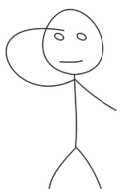
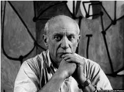
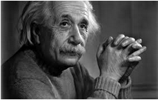

Group Divison
Odd roll numbers to the left
Even roll numbers to the right
education
engineers
hands-on curriculum
STEAM
Why Design?


What is the difference?
Line tracking for class 7 students
What is the change?
Project ideas
list of project ideas
have you thought about design in the projects
What is Design?
Design is a way of thinking
Divergent Thinking = generating multiple ideas, solutions, or alternatives.
Convergent Thinking = evaluating and selecting from among those alternatives.
Divergent Thinking
- Creativity to see many unique viewpoints
- Creativity to generate solutions from that viewpoint

 =======
=======
Design is a way of thinking
Divergent Thinking = generating multiple ideas, solutions, or alternatives.
Convergent Thinking = evaluating and selecting from among those alternatives.
Divergent Thinking
Creativity to see many unique viewpoints
Creativity to generate solutions from that viewpoint
Design is a way of making
Capability to understand, analyze, model and test view points
Iterative

Design is a way of making
Capability to understand, analyze, model and test view points
Iterative
Design is a.....
way of experiencing
Design is a way of experiencing
Observe and emphatize: design for people
User-centric design
Understand people's tasks, goals and values
Pay attention to people's abilities and situations

 =======
=======
Design is a way of experiencing
Observe and emphatize: design for people
User-centric design
Understand people's tasks, goals and values
Pay attention to people's abilities and situations
>>>>>>> d799e65b29a23d91494b0ad2d22811978b8c5e84
Design is therefore
Thinking divergently,
making iteratively, and
experiencing emphatically
Design is about life...
<<<<<<< HEADand death
patients stayed an patients stayed an average of 3.7 days fewer if they were exposed to morning light
Kids were terrified of getting MRIs but the new Pirate themed MRI design made it a fun experience.
and death
patients stayed an patients stayed an average of 3.7 days fewer if they were exposed to morning light
>>>>>>> d799e65b29a23d91494b0ad2d22811978b8c5e84Kids were terrified of getting MRIs but the new Pirate themed MRI design made it a fun experience.
Activity:

Write down as many ways to use aluminium foil as possible
<<<<<<< HEAD =======
=======
in 60 seconds
>>>>>>> d799e65b29a23d91494b0ad2d22811978b8c5e84Brainstorming
Brainstorming techniques
How to generate ideas
Techniques: What we're aiming for?
"I begin with an idea and then it becomes something else."
-Pablo Picaso
"If at first, the idea is not absurd, then there is no hope for it."
-Albert Einstein
Techniques
Brainstorming

Mind-mapping
Cross Association

Cross Association

Cross-Association


Cross-Association


Mind mapping
Activity 2:
List of topics to brainstorm:
- Brush
- Food
- Bike
- Guitar
- Chair
- Football
- Spoon
- Bottle
- Coffee
- Computer
Activity 3:
List of topics to brainstorm:
- Shoes
- Hair
- Tank
- Fan
- Jacket
- Ladder
- Hat
- Plane
- Phone
- Pen
Cross product
Activity 4:
Use two elements from the mind map to come up with 3 different cross products
- Brush -> Shoes
- Food -> Hair
- Computer -> Tank
- Chair -> Fan
- Bottle -> Jacket
- Guitar -> Ladder
- Spoon -> Hat
- Football -> Plane
- Coffee -> Phone
- Bike -> Pen
Up next
Feedback
Certification
Commitment